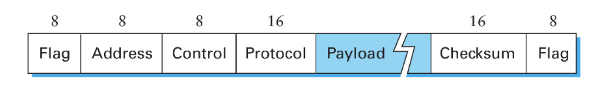
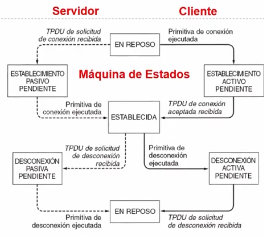

Unidad 0 - Introducción, conceptos básicos
El primer invento similar a lo que conocemos hoy en día como redes de comunicación fue la del telégrafo. Luego, le siguió la del teléfono, y ambos tenían una cualidad que persistió hasta aproximadamente la década del 70: la conmutación de circuitos.
La conmutación de circuitos como indica el nombre implicaba que haya operarios encargados de conectar a las dos personas / aparatos que querían iniciar una comunicación (cof cof, operadora, comuníqueme con pirulito)
Este approach tiene varias desventajas, por lo que mayoritariamente entre los años 1959-1969 se desarrollaron las ideas que nos llevaron a la conmutación de paquetes, cuyo objetivo principal era resultar en una red más tolerante a fallas. Cómo se logró esto?
- Redundancia: que haya múltiples caminos entre dos puntos de la red
- Descentralizada: toleracia a censura
- División en fragmentos de los mensajes cosa de que puedan tomar caminos diferentes.
ARPANET (Advanced Research Projects Agency Network) fue uno de los más importantes.
Estandarización
Las tecnologías de redes con conmutación de paquetes se suiguieron desarrollando, terminando a mediados de los 80 con una situación en la que tenías muchas redes distintas cada una con su implementación particular y sus propios detalles. Se empieza a hablar de la idea de tener una red única (en mayo de 1983 ISO publica “ISO 7498:The Basic Reference Model for Open Systems Interconnection” como un estándar internacional)

El modelo OSI describe tódo lo que sucede con la información en una comunicación entre dos puntos. Parte el proceso en 7 capas, en la que cada una tiene un fin particular y cuyas entidades relevantes son definidas por eso. Por ejemplo, en la capa de aplicación tu entidad puede ser un archivo mientras que en la capa de de red tu entidad puede ser el paquete.
Si bien se usa el modelo OSI para estudiar teoría de comunicaciones, hoy en día el verdadero ganador fue el modelo de TCP/IP, en donde hay 4 capas en lugar de las 7 que propone OSI

TLDR: OSI y TCP/IP compitieron durante un tiempo, pero una de las mayores diferencias radicaba en que OSI era un protocolo que se estaba gestando por un comité conformado por gente de la industria y cada uno quería tener su influencia sobre el protocolo. Esto resultó en problemas para ponerse de acuerdo y en un modelo que si bien era completo era mucho más difícil de implementar, más caro y complejo.
Mientras seguían discutiendo sobre el estándar de OSI, TCP/IP ya se estaba usando...
Nivel Físico
Sistema de Comunicaciones
Modelo: tengo fuente de info -> Emisor -> ----- canal de comunicación ----- -> Receptor -> Destino
- Qué es información?
- Qué es un canal?
- guiado (cable)
- no guiado (inalámbrico)
- Siempre me ingresa ruido (alto o bajo)
Hablo en meet y tengo a mi gato maullando. Tengo que hablar más fuerte. Más fuerte = mejor? Bueno no, lo que importa es la relación entre cuánto grito y el ruido ambiente.
- Relación Señal / Ruido
- La señal tiende a atenuarse a mayor distancia. Si se achica la señal y el ruido es constante, entonces se achica la capacidad de transmisión también.
- Lo importante de señal:
- Es una onda electromagnética
- Se propaga a la velocidad de la luz (a un ~70% de la velocidad de la luz en el vacío)
- Demora, no es instantáneo (es un límite físico, no lo puedo evitar)
- Tiempo de propagación
- RTT (Round Trip Time) entre USA y ARG = 100ms
Frecuencia \(f\) = Cantidad de ciclos que entran en un segundo
Longitud de onda \(\lambda\) = \(c\) (velocidad de la luz) \(/ f\)
- a mayor frecuencia menor longitud de onda (\(c\) es constante)
Glosario:
- Amplitud
- Frecuencia Angular (= \(2 \pi f\))
- Frecuencia Temporal (\(f\))
- Período = \(\frac{1}{f}\)
- Fase (desplazamiento)
Dominio Transformado
Lo anterior era orientado al dominio del tiempo. Idea: paso ese dominio a otro para procesarlo mejor:
- serie trigonométrica de fourier -> puedo representar ordas cuadradas como una serie infinita de senos y cosenos
- permite descomponer la señal en las distintas frecuencias
- transformada de fourier
- lo anterior en la teoría. Esto en la práctica
- esto es lo que en la práctica permite descomponer una señal en sus distintas armónicas / componentes de frecuencia
Ancho de banda
Rango de frecuencias senoidales que pueden pasar por el medio sin ser atenuadas (< 3db, esto es una generalización).
Tengo ancho de banda de 0 a 4 khz. Meto onda cuadrada periódica de 3khz en un canal con ancho de banda de 0 a 4khz. Qué obtengo a la salida?
Rta: Obtengo una onda senoidal de 3khz, porque la primera armónica tiene el triple de frecuencia que la fundamental (en este caso es de 3 y la armónica ya tiene 9), o sea que salvo la fundamental te filtra todo.
Teoría de la información
(En el 48') Llega Shannon con su paper "A Mathematical Theory of Communication". Ídolo, Genio, Maestro, Crack.
Idea fundamental:
- No interesa el significado del mensaje (No me importa si es teléfono, tele, internet, etc.)
- Teoría Clásica de la información
- Propone 2 teoremas fundamentales:
- Codificación para una fuente sin ruido
- Codificación para un canal con ruido
- Sorprendentemente nunca habla de cómo implementar nada
Definición: qué es la información
$$ I(E) = log(\frac{1}{P(E)}) $$
La información que me da un evento es el logaritmo de la inversa de la probabilidad de que ese evento suceda.
Unidades:
- log en base 2? 1 bit (por qué? Si tengo un dígito binario equiprobable \(I(\)sale 0/1\() = 1\)
- (hay otros)
Fuente de Memoria Nula
Es el modelo que tomamos asumiendo que cada símbolo que emite es estadísticamente independiente del siguiente
Entropía
Viene a representar algo así como la cantidad media de info por símbolo de la fuente (similar a Esperanza).
$$ \sum_S P(s_i)I(s_i) \text{ bits} $$
Es algo como la cantidad de info que voy a obtener cuando observo un símbolo / evento.
Cuándo maximizo la info que me van a dar los eventos? Cuando los eventos son equiprobables.
Extensión de la Fuente de Memoria Nula
En vez de considerar de a un bit, agrupo varios bits juntos
Codificación
Codificación sería el proceso por el cual mappeamos los símbolos de la fuente a símbolos de un alfabeto asociado. Por qué hacemos esto? En primer lugar porque a veces no tenemos una representación sencilla con la que trabajar. Y segundo porque dependiendo el tipo de codificación que usemos vamos a obtener una mejor o peor eficiencia.
- Le decimos código bloque a una codificación que asigna cada símbolo de la fuente a una secuencia de símbolos del alfabeto destino.
- Si la codificación es una función inyectiva, decimos que la codificación es no singular
- Y decimos que una codificación es unívocamente decodificable si ninguna tira de símbolos del código (o sea los códigos generados) admite más de una única decodificación.
- Por último, decímos que un código es instantáneo si es posible decodificar sin ver los símbolos que suceden (no tiene que hacer look ahead)
Una condición necesaria y suficiente para que un código sea instantáneo, es que no haya palabra en el alfabeto que sea prefijo de la misma. Ojo, dos palabras pueden tener un mismo prefijo común siempre que el mismo no pertenezca al alfabeto.
Teorema: Instantáneo => unívocamente decodificable
- En ascii tenemos 8 digitos binarios por símbolo
- Sin embargo, en morse tenemos una cantidad variable
Pensemos ahora que lo que mandamos son mensajes, y para representar cada mensaje (\(m_i\)) lo representamos con una palabra de longitud \(L_i\). Y nuestro símbolo se codifica con cadenas de un alfabeto de \(r\) símbolos.
Para esto último se define la longitud media de un código. Es la probabilidad de ocurrencia de cada símbolo por su longitud. Sería como la esperanza de la longitud de recibir un símbolo, o algo así.
$$ L = \sum{p_i L_i} $$
Cómo lo minimizo? Al que más probabilidad tenga, le doy el código más chico.
Otra cosa más, es que para asegurar que no haya pérdida de información requiero que:
$$ L log(r) \geq H(S) $$
Donde \(log(r)\) es la cantidad promedio máxima de info de un símbolo del código (por lo que vimos antes).
Definimos con esa desigualdad la eficiencia de un código \(h\) como:
$$ h = \frac{H(s)}{L log(r)} $$
y \(h_{max} = 1\)
Codificación de Huffmann
Es un método que permite construir codificadores óptimos en base a la frecuencia en la que aparecen los símbolos (de la fuente).
Medios de Transmisión Reales
Cualquier canal de comunicación:
- Está expuesto a ruido
- Tiene problemas de potencia
- Tienen problemas de ancho de banda
Fórmula de capacidad de Shannon para un canal sujeto a ruido
$$ C_max(bps) = B(\text{hz}) log_2(1 + \text{SNR}) $$
La relación señal-ruido de la capacidad de Shannon se expresa como logaritmos:
$$ SNR_{db} = 10 log_{10}(\text{SNR}) = 10 log_{10}(\frac{\text{PotenciaSeñal}}{\text{PotenciaRuido}}) $$
Por qué la escala logarítmica?
Es para ajustarse a las magnitudes. La atenuación es logarítmica, el oido tiene respuesta logarítmica, etc. Y la escala logarítmica resulta más práctico (sobre todo para visualizar)
Intro a Nyquist
El ñato este tiró una fórmula para la capacidad máxima en canales sin ruido:
-
2 niveles: $$ C = 2B(\text{Hz}) $$
-
\(M\) niveles: $$ C = 2B(\text{Hz})log_2(M) $$
Sin embargo hay una restricción, \(M\) tiene que ser más chico que \(\sqrt(1 + \text{SNR})\)
Qué es el delay?
Está formado por:
- el tiempo de propagación
- el tiempo de transmisión
- el tiempo de encolamiento
- el tiempo de procesamiento
Notar que sólo el tiempo de propagación ya te puede estar limitando porque transmitimos casi a la velocidad de la luz y sin embargo para mandar 1 bit por 10000km por fibra tengo un tiempo de propagación aproximado de 50ms (y por lo tanto 100ms de RTT).
Unidad 1 - Nivel Físico
La fórmula de Shannon pone un límite en la tasa de transmisión, pero no en la probabilidad de error. En teoría se podría minimizar arbitrariamente la probabilidad de error usando una codificación lo suficientemente combleja y obviamente con \(R_b \leq C\). Al no cumplir esto último esa idea de minimizar la probabilidad de error arbitrariamente ya no es posible.

Si graficamos la relación entre la SNR y la relación capacidad sobre ancho de banda obtenemos el gráfico de arriba, que de alguna forma nos da valores para lo que es posible y lo que no. En la práctica se busca asemejarse lo más posible a la función graficada, buscando aumentar la cantidad de bits/s.
Tengo un canal de ancho de banda de 0 a 2 Mhz, cuál es la forma de la onda de salida si inyecto una señal de 1 Mhz. Sólamente obtengo la fundamental ya que a partir de la tercer armónica que no entra en el ancho de banda.
Medios de transmisión
Hoy en día tenemos internet compuesta por provedores que tiene tecnologías de acceso:
- Fibra
- Cable
- Satélite
- Wifi
- Celular

Las ondas electromagnéticas "necesitan" (en realidad no necesitan nada, se pueden propagar por el vacío) un medio de transmisión por el cuál transmitirse. Pueden ser:
- Guiados: Cable
- de cobre
- coaxil
- fibra óptica
- No guiados: El espacio, libre
- por radio
- microondas
- ondas infrarojas
- laser
- satélite
- luz
Red telefónica
Vamos a tomar de ejemplo a la red telefónica ya que muchos de los conceptos se replican en otros medios de tecnologías.
- mediante conmutación de circuitos
Multiplexación
Multiplexar consiste en poder tener varias comunicaciones simultáneas en un mismo troncal físico.
Podemos multiplexar:
- por tiempo: una suerte de round robin
- por división frecuencia: transmito a través de las distintas bandas
- el circuito para esto suele ser más complejo
- al tener menos ancho de banda es "más lento", pero tengo más uptime
- por división de onda: lo mismo que antes pero aplicado a sistemas ópticos

Taxonomía de Redes
Las Redes de comunicaciones se pueden dividir en:
- Redes de conmutación de Circuitos
- Redes de conmutación de Paquetes
- Redes con Circuitos Virtuales
- Redes de Datagramas (en el 99.999% de la materia vemos esto)
- servicio sin conexión
- el nivel de transporte brinda soporte para dar servicio orientado a conexión también (ej: TCP)
Las redes de conmutación de paquetes se basan en el concepto de multiplexación estadística. Mi conmutador tiene un buffer y despacha de a poco en base a algún criterio en base a la dirección origen y destino de dichos paquetes.
Esta idea también implica que cada paquete compite con otros por ser enviado y puede llevarnos a situaciones de congestión.
Conversión Analógico Digital
Tengo 2 Etapas:
- Primero una etapa de muestreo
- Gracias a Nyquist sabemos que debemos muestrear al doble del ancho de banda (por lo menos)
- Además, tengo que definir con cuántos dígitos binarios uso para representar cada muestra
- Segundo cuantifico dichas muestras (o sea mando el valor a su representación binaria correspondiente)
- Hoy en día a esa técnica la llamamos PCM (Pulse Code Modulation)
Teorema del muestreo (Nyquist)
Si queremos Reconstruir una señal cuya frecuencia máxima es \(f_m\) debemos muestrar dicha señal a una razón de \(f_s > 2 * f_m\) llamada frecuencia de muestreo

Este es un diagrama (un poco antiguo). Las oficinas interurbanas operaban en digital, por lo que era necesario que la señal originalmente analógica sea convertida a una señal digital.
Uno en casa entonces tenía un modem, que emitía una señal analógica y luego le seguía un codec que se encargaba de hacer la conversión analógico digital. Del otro lado de la red, estaba un codec que cumplía la función inversa y un modem por cliente.
Si lo pensamos con el caso del teléfono, la mayoría de las comunicaciones por voz se pueden agrupar en el rando de 0-4Khz, por lo tanto se necesita una tasa de muestreo de 8Khz o 8000 muestras por segundo. Como en ese caso cada muestra se codificaba en 8 bits (En realidad son 7 bits para la data y 1 para sincronización), era necesario un ancho de banda (I know, está mal usar este término) de 64kbps.
Modulación
Frecuencia Modulada vs Amplitud Modulada

Tengo la Señal Portadora y la Señal Modulante.
- Frecuencia Modulada es cuando la frecuencia de la portadora varía en base a la amplitud de la modulante.
- Amplitud Modulada es cuando la amplitud de la portadora varía en base a la amplitud de la modulante.
Modem
Si volvemos al diagrama, la idea del modem era transformar la se√±al digital de la computadora en una se√±al anal√≥gica para poder mandarla por los cables de cobre (y posteriormente volver a ser convertida a digital por el codec ü§∑).
El truco de los modems entonces es meter la información sobre una señal portadora que pueda pasar por el ancho de banda disponible. Para esto hay 3 técnicas de modulación de una señal digital sobre una analógica:
- Desplazamiento de amplitud (ASK)

- Desplazamiento de frecuencia (FSK)

- Desplazamiento de fase (PSK)

-
Velocidad de Modulación \(V_m\): es el número de cambios de señal por unidad de tiempo. Se mide en Baudios (símbolos / segundo).
-
Velocidad de Transmisión: \(V_m * N\), donde \(N\) es el número de bits por símbolo. Se mide en bits por segundo.
Let's go even further
Recomendación: si tienen dudas lean esta parte del Tanenbaum, en el Peterson no está.
Vieron que dijimos que la velocidad de Modulación la medimos en símbolos por segundo, y no en base a la cantidad de bits. Bueno, tranquilamente podemos asumir que no tengo un único canal binario si no muchos (varios bits), y la combinación son los distintos símbolos a transferir.
Luego, lo que puedo hacer es modular para 2 bits en base a 4 frecuencias o 4 fases (QPSK) por ejemplo. Esto es lo que se conoce como modulación multinivel.
También puedo combinar amplitud y fase (QAM) o amplitud y frecuencia (no puedo ambos porque fase y frecuencia están relacionados). (hoy en día ya estamos llegando a 1024-QAM y 4096-QAM)

Y puedo agregar tantos niveles como quiera, pero fijate que a medida que agrego más puntos, hago más finita la cuadratura. Con lo cual es más vulnerable al ruido.
El error generado se llama MER, y se expresa en db como:
$$ \text{MER} = 10 log \frac{\text{RMS error magnitude}}{\text{average symbol magnitude}} $$
A medida que me alejo del router y pierdo señal, aumenta la SNR y por ende me cuesta más distinguir cada símbolo de QAM. Entonces lo que hace Wi-Fi es achicar la cantidad de símbolos y por ende baja de QAM-1024 (ponele) a QAM-256, y por ende baja su velocidad para evitar errores en la transmisión.
Unidad 2 - Nivel de Enlace
Tanto OSI como TCP usan un modelo basado en capas. Cada Entidad separa su funcionalidad en varias capas. Cada capa agrega info de control, mediante el agregado de headers. De esta forma la capa agrega / interpreta los headers o frames enviados / recibidos y permite que haya una comunicación entre las capas adyacentes pero a su vez capa a capa entre los distintos hosts.

Además, el servicio que una capa le brinda a otra se puede clasificar en:
- sin conexión y sin reconocimiento (ej: UDP)
- sin conexión y con reconocimiento (ej: uso de ACK en capa 2 de OSI)
- orientado a conexión (ej: websockets, TCP)
El objetivo de los protocolos de comunicación (nivel de enlace en OSI), buscan en proveer:
- confiabilidad
- control de errores
- control de flujo
Un ejemplo para garantizar control de errores sería agregar un CRC / checksum que el receptor valida. Si el receptor detecta que el mensaje es inválido, basta con que no mande un ACK (aknowledge) de que recibió el mensaje.
Control de errores
Si consideramos que lo que mandamos son codewords de \(n\) bits, compuestos por \(m\) bits de datos y \(r\) bits de redundancia y siendo \(d\) la distancia mínima de Hamming entre 2 codewords posibles y \(e\) la cantidad de bits erroneos para un cierto mensjae, necesitamos que se cumpla que:
- \(e + 1 \leq d\) para poder detectar que hubo errores
- \(2*e + 1 \leq d\) para poder corregir errores
Si quieren ver un algoritmo para detección y corrección de errores pueden chequear Reed-Solomon
Confiabilidad
Para garantizar confiabilidad, va a ser necesario poder efectuar retransmisiones. Esto se puede dar de forma implícita cuando se produce un timeout (tiempo sin recibir un ACK de que se recibió el mensaje), o de forma explícita si nuestro protocolo admite mensajes de control.
Cómo puedo hacer el ACK de cierto símbolo? Mediante números de secuencia. El ACK entonces representa que el frame con cierto número de secuencia fue recibido.
Primer approach: Stop and Wait
- Espero a recibir el ACK para mandar el nuevo frame.
- Dado que es "bloqueante", basta con tener un único bit para el número de secuencia.
Qué pasa si ocurre lo siguiente:
- El emisor manda el primer frame
- Transcurre el tiempo suficiente para que ocurra un timeout (en el medio el Receptor recibe el frame pero no responde a tiempo)
- El emisor vuelve a mandar el primer frame
- El emisor recibe el ACK del primer frame
- El receptor recibe el primer frame y manda el ACK
- El emisor recibe por segunda vez el ACK del primer frame
Ese fenómeno es lo que se conoce como el problema del solapamiento o el problema de las reencarnaciones, y los distintos approaches van a buscar problemas de lidiar con esto.
Eficiencia de un protocolo
Queremos evaluar cuánto tiempo se está transmitiendo vs cuánto tiempo se está esperando por confirmaciones. Lo definimos como:
$$ \eta_{proto} = \frac{T_{tx}}{\text{RTT}(F)} $$
Pregunta: Tiene sentido que \(\eta_{proto} > 1\)?
Segundo approach: Ventana deslizante
Para el caso de Stop and Wait, notar que transmito la mitad de lo que dura el RTT y después espero, entonces tengo una eficiencia del 0,5. Queremos hacerlo mejor.
Idea: mando varios frames seguidos, sin esperar al ACK. Esto es el concepto de ventana de frames, y en ese caso el cálculo de la eficiencia cambia ligeramente:
$$ \eta_{proto} = \frac{T_{tx}(V)}{\text{RTT}(F)} $$
Ahora el \(T_{tx}(V)\) es el tiempo que me tarda mandar todos los frames de la ventana, mientras que el \(\text{RTT}(F)\) es lo que tarda en volverme el ACK del primer frame que mandé.
- Requiero de más bits para el número de secuencia (tiene que permitirme identificar todos los frames de la trama por lo menos)
- A medida que recibo los ACk voy desplazando la ventana (ojo porque ahora hay que determinar cuándo desplazo la ventana. Siempre que recibo? O sólo si recibí el siguiente al último que tenía reconocido?)
Para buscar la mejor eficiencia posible se define como tamaño de ventana (en frames) a:
$$ \text{SWS} = \frac{V_{tx} * RTT}{|Frame|} $$
Y envío un frame nuevo siempre que \(\text{UltimoFrameEnviado} \leq \text{UltimoFrameReconocido} + \text{SWS}\)
ACKs acumulativos vs selectivos
En la sección anterior faltó mencionar cuál es el comportamiento esperado del receptor ante algún error. El primer approach es el de ACKs acumulativos, en donde a partir de que se produce un error en la transmisión el receptor ignora todos los mensajes posteriores hasta que el frame con error se reenvía y recibe correctamente. (Esta idea de retransmitir todo se lo conoce también como GoBackN)

Ahora, también podría pedir que el receptor tenga un buffer que permita guardar los frames que va recibiendo, y en ese caso basta con que el receptor mande una señal pidiendo el frame específico.

Para ambos casos definimos la ventana de recepción \(\text{RWS}\) como:
$$ \text{RWS} = \begin{cases} \text{SWS}, & \text{si hay SACK} \\ 1, & \text{en caso contrario} \end{cases} $$
Además, como se puede dar acá también el problema de las reencarnaciones, es necesario poder distinguir por lo menos \(SWS + RWS\) frames distintos.
Sobre la eficiencia de la ventana
Primero necesito que definamos algunos conceptos:
- El tiempo de transmisión \(T_{tx} = \frac{|datos|}{V_{tx}}\) es el
tiempo para enviar todos los bits de un frame a través del medio de
transmisión.
- Ocupa una porción significativa de tiempo en conexiones lentas o donde el frame es muy grande.
- El tiempo de propagación \(T_{prop} = \frac{distancia}{V_{prop}}\) es
el tiempo desde que el bit es transmitido hasta que llega al receptor.
- La velocidad de propagación \(V_{prop}\) es algo propio del medio de transmisión, por lo general cercano a la velocidad de la luz (suele ser una constante multiplicada por la velocidad de la luz).
- Ocupa una porción significativa de tiempo en conexiones entre dos puntos muy lejanos.
- El tiempo de encolamiento \(T_{queue}\) es el tiempo que espera un frame en un buffer hasta ser transmitido. Dependiendo del estado de congestión de la red puede ser significativo o no.
- El tiempo de procesamiento \(T_{proc}\) es el tiempo que se tarda en leer el header de un frame y decidir qué hacer con él. En la práctica se lo asume nulo o poco significativo.
Por último, la capacidad de volumen \(C_{vol}\) de un canal sería la cantidad de bits que entran en el canal desde que se envía el primer bit hasta que llega al receptor (una suerte de flujo máximo de bits para quienes hayan cursado algo III).
$$ C_{vol} = \text{Delay} * V_{tx} $$
Sin embargo, para los protocolos punto a punto se es un poco más específico y se mide como la cantidad de bits que entran hasta recibir el primer ACK
$$ C_{vol} = \text{RTT} * V_{tx} $$
(Recuerdo: antes mencionamos que el tamaño óptimo de ventana era \(SWS = \frac{\text{RTT} * V_{tx}}{|frame|} = \frac{C_{vol}}{|frame|}\))
Entonces... ¿Por qué es óptimo?
Recordamos que la eficiencia del protocolo de ventana deslizante se medía como:
$$ \eta_{proto} = \frac{T_{tx}(V)}{\text{RTT}(F)} $$
\(T_{tx}(V)\) Era el tiempo que tardaba en mandar todos los frames de la ventana. Eso lo podemos pensar como:
$$ T_{tx}(V) = \frac{SWS * |frame|}{V_{tx}} $$
Entonces:
$$ \eta_{proto} = \frac{SWS * |frame|}{V_{tx} * \text{RTT}(F)} \\ SWS = \eta_{proto} * \frac{V_{tx} * \text{RTT}(F)}{|frame|} $$
Y asumiendo que \(\eta_{proto} = 1\) dado que es óptimo obtenemos que:
$$ SWS = \frac{V_{tx} * \text{RTT}(F)}{|frame|} $$
Unidad 3 - Medios Compartidos
Antes vimos que se podía compartir un canal de transmisión mediante técnicas como la multiplexación por tiempo o por frecuencia. Esas técnicas lo que permitían era lograr que varios nodos utilicen el medio "de forma independiente", o sea que la transmisión de un dispositivo no interfiera con la de otro.
Ahora vamos a ver otro approach, que es sugerido y generalmente utilizado para ethernet y en el protocolo de wifi (802.11). La idea es permitir que todos los dispositivos usen el mismo canal para transferir, y si más adelante hay un problema (ej 2 quieren transmitir al mismo tiempo) ahí se ve cómo se resuelve.
Y por supuesto se va a buscar minimizar la cantidad de intentos que tiene que hacer un dispositivo para poder hacer el envio de paquetes deseado y asegurar fairness.
La tecnología que usa Ethernet y otras redes inalámbricas (802.11), lleva el nombre de Carrier Sense, Multiple Access with Collision Detect (CSMA/CD). Es un protocolo que permite que un conjunto de nodos manden mensajes a través de un enlace compartido.
- El Carrier Sense viene por el hecho de que todos los nodos pueden distinguir en todo momento si un canal está libre o en uso.
- Por otro lado, el Collision Detect viene por el hecho de que el emisor a medida que transmite sensa el canal y puede darse cuenta de si hubo una colisión en la transmisión con otro nodo.
La realidad es que hoy en día la mayoría de las conexiones cableadas son punto a punto (o sea el enlace es propio de cada par de nodos). Y la parte de multiplexación la resuelven los switches. Es por eso que hoy en día no está tan presente el protocolo... redes cableadas.
Por otro lado las redes inalámbricas hoy en día son la norma en muchos entornos con lo cual el uso de CSMA/CD retoma relevancia.

Llamamos Dominio de Colisión al conjunto de los nodos que pueden generar una colisión en el medio al intentar transmitir (no están incluidas los nodos separados por medio de un switch).
CSMA/CD
Vamos a ver el caso de acceso múltiple en cable ethernet ya que si bien es algo anecdótico hoy en día, los mismos principios se pueden aplicar a nuevas tecnologías.
Para empezar hablemos un toque de Ethernet:
- Admite tramos de hasta 500m (no más para evitar atenuación de la señal).
- Admite máximo hasta 4 repetidores
- Requiere como mínimo 2,5 metros entre host y host.
- Las transmisiones son broadcasteadas a lo largo del cable (y a través de repetidores)
Además, un frame de Ethernet contiene los siguientes campos (segun el estándar 802.3):

- Primero tiene un preámbulo de 64 bits, es una secuencia de 0's y 1's alternada que le permite al receptor sincronizarse con la señal.
- Después le siguen las direcciones de destino y fuente respectivamente que son
direcciones de 48 bits.
- las direcciones son "únicas" y vienen grabadas en la rom de los adaptadores de red
- El adaptador de red sensa el canal y si ve un frame cuyo campo de destinatario es su dirección entonces le deriva el frame al host. Hace lo mismo si el frame tiene la dirección de broadcast.
- Después sigue el campo del tipo, que indica a cuál protocolo de más alto nivel se le enviaría el frame.
- Luego el body del frame tiene la data en si a enviar. Un detalle no menor es que un frame puede contener hasta 1500 bytes de datos, y tiene que tener por lo menos 46 bytes de datos (esto último es necesario para tener tiempo suficiente de detectar una colisión) por lo que en caso de no tener suficientes datos se le agrega algo de padding.
- Por último un campo CRC para chequeo de errores
Un pequeño detalle es que para el host el frame de ethernet en realidad no tiene ni el preámbulo ni el CRC, el adaptador de red es el que se encarga de agregar esos campos extra.
El algoritmo que sigue un transmisor que implementa CSMA/CD se puede resumir con el siguiente diagrama de estados:

- El transmisor siempre que le llega un frame nuevo va a intentar transmitir
- Si el canal está libre transmite de una
- Si el canal está ocupado, espera a que se libere
- Ni bien se libera, el transmisor va a intentar enviar
- Si está transmitiendo, pueden pasar 1 de 2 cosas:
- Es el único dispositivo usando el canal y el frame se envía correctamente y sin problemas
- Mientras está enviando, otro dispositivo también decide enviar un frame,
generando lo que se conoce como una colisión. Para eso el transmisor
sensa el medio y si detecta un voltage anormal entonces eso es a causa de
la colisión
- Cuando detecta una colisión frena la transmisión actual y envía una
secuencia de jamming de 32 bits (por lo general es una tira de
1's y listo). El objetivo de dicha secuencia es hacer que el receptor
deje de escuchar la señal.
- Eventualmente el otro emisor también va a detectar la colisión y va a enviar su propia secuencia de jamming.
- Una vez que se detecta la colisión y se envía la secuencia de jamming, se aplica una política de exponential backoff. Eso es esperar un cierto tiempo antes de enviar. Si se vuelve a dar una colisión, esperar el doble y así hasta que se haga efectiva o se supere un límite predefinido (en general es de 16 intentos), en cuyo caso el adaptador avisa al host que la transmisión falló.
- Cuando detecta una colisión frena la transmisión actual y envía una
secuencia de jamming de 32 bits (por lo general es una tira de
1's y listo). El objetivo de dicha secuencia es hacer que el receptor
deje de escuchar la señal.
Para ser un poco más específico, la idea en el exponential backoff es dividir el tiempo en slots entre 0 y \(2^k - 1\), siendo \(k\) la cantidad de intentos. Se elige uno de los slots al azar y eso representa la cantidad de slots que se espera. Un slot representa 51,2 \(\mu\)s que es el tiempo necesario para transferir el frame más chico.
Ahora que conocemos el algoritmo, tiene más sentido el motivo por el cuál necesitamos tener al menos 46 bytes de datos a enviar. Esto es porque incluso en el caso en el que estén los dos hosts lo más alejados posible (2500 metros usando 4 repetidores), el Round Trip Delay es de al rededor de 51,2 \(\mu\)s que en una conexión de 10Mbps equivale a 512 bits. De esta forma, si nuestra frame tiene al menos 512 bits si o si uno de los dos emisores va a detectar la colisión antes de terminar de enviar su frame.
Ethernet se dice que es un protocolo 1-persistente porque siempre que sensa el medio y está libre va a intentar enviar. Este es un caso particular de lo que se conoce como transmisores p-persistentes, en donde se transmite con probabilidad p una vez que se libera el medio.
Una última observación es que en este algoritmo se contempla que sólo se puede leer o escribir en el canal, pero no los 2 al mismo tiempo. Eso se conoce como un algoritmo de half-duplex. No confundir esto con la clasificación de canales. El canal puede ser full duplex (se puede escuchar y enviar al mismo tiempo) mientras que el algoritmo es half duplex.
Recomiendo también pegarle una chusmeada a esta explicación de CSMA/CD.
Midiendo performance de CSMA
Sean \(S\) la carga ofrecida (nro de intentos de transmisión por unidad de tiempo, o sea cuánto tengo que usar del medio para transmitir) y \(G\) el goodput (proporción de transmisiones exitosas por unidad de tiempo), entonces:
$$ S = G * (1 - P_{colision}) $$
Podemos graficar la relación entre la carga, el goodput y la variante de CSMA:

- Aloha es otro protocolo que consiste en lo que vimos antes. Enviar un mensaje
y si no me llega un ACK de dicho mensaje re-enviar. (esto no descarta
totalmente ese mecanismo para asegurar confiabilidad y control de errores
porque como verems más adelante si se usa en protocolos de más alto nivel)
- Slotted aloha es lo mismo pero la emisión se da en "slots discretos"
- CSMA es fácil de implementar pero tiene mala perf en la práctica a medida que aumenta la carga. (en estudios se validó que a partir de 30% de carga aprox ya se degrada mucho)
- En el gráfico se hace mención de non-persistent CSMA. La diferencia entre este y 1p-CSMA/CD es que 1p-CSMA/CD transmite ni bien encuentra el canal libre. En cambio el non persistent sensa el canal y si está en uso espera una cantidad fija de tiempo (no transmite ni bien se libera). Si bien reduce las changes de colisión también cae el throughput. Dicho eso reacciona mejor a la relación entre carga y goodput.
- Se hace obvia la relación entre el delay hasta poder transmitir (si espero más entre cada transmisión) y el goodput, y cómo esto afecta al throughput final.
TODO: Resumir diapos 20-24 inclusive (no encuentro referencia en la docu)
Redes Compartidas (Redes inalámbricas)
- En las redes inalámbricas, la señal disminuye / se atenúa con la distancia (mayor impacto que en no inalámbricas)
- Además las fuentes de ruido son más impredecibles
- Qué sería compartir el medio acá? Se comparte el ancho de banda (el espectro electromagnético).
- Está regulado con qué potencia se transmite
- El medio es mucho más fácilmente "pinchable" (es por eso que se vuelve una verdadera necesidad encriptar la data)
Bandas no licenciadas
Son bandas para las cuales no tengo que pedir permiso para transmitir
- 900 mhz
- 2.4 ghz
- 5 ghz
Si alguien quiere transmitir en la misma frecuencia me va a generar interferencia. Entonces surge la pregunta, si 2.4 es una banda no licenciada y todo el mundo lo usa, cómo es que mi wifi no es interferido por el del vecino? Eso es el motivo por el cual hay límites a la potencia de la señal.
Además, las bandas se pueden particionar en canales. Por ejemplo, para 2.4 en wifi tengo la banda partida en 13 canales y sólo puedo usar 3 de esos canales: el 1, 6 y 7 y cada uno tiene un ancho de 22mhz.
Para el caso de 5ghz, puedo tener canales de 20, 40, 80 y 160 mhz
Más adelante surgió la idea de usar el espectro expandido. La idea es saltar entre frecuencias varias veces por segundo. Surgió en el contexto de comunicaciones militares porque hacía más difícil detectar la señal y casi imposible meterle ruido (el Tanembaum usa el término jammed).
Protocolos de acceso múltiple
Hay 2 problemas importantes que surgen en el uso del medio compartido para wireless:
- El problema de la estación oculta: si tengo la transmisión
A -> B C,Csensa el medio para transmitir y no detecta aApor estar fuera de alcance. Entonces empieza a transmitir, introduciendo ruido en lo que b detecta. - El problema de la estación expuesta: si tengo las transmisiones
A <- B C Dy C quiere transmitir aD, puede queCsense el medio y como detecta la transmisión deBaAentonces decide no transmitir cuando en realidad la transmisión deCaDno afectaría la señal queArecibe.
Para paliar estos problemas tenemos una variante de CSMA que es CSMA/CA (o sea con collision avoidance).
CSMA/CA
- Antes de transmitir, escucho
- Si no está ocupado espera un tiempo llamado espaciado entre tramas (IFS)
- Si está ocupado o se ocupa durante la espera hay que esperar hasta el
final de la transacción
- Cuando termina la transacción se ejecuta un algoritmo de backoff
- se espera un valor de una uniforme en un intervalo llamado
ventana de contención
- se mide en slots
- si durante ese tiempo el medio está ocupado durante un tiempo mayor al IFS, se suspende la espera hasta que se cumpla la condición de canal libre
- se espera un valor de una uniforme en un intervalo llamado
ventana de contención
- Cuando termina la transacción se ejecuta un algoritmo de backoff
En WiFi se espera recibir ACK a diferencia de ethernet. Si no se recibe se retransmite a diferencia de ethernet. Si no se recibe se retransmite.
Modelo de Referencia de 802.11 (WiFi)
Lo componen 3 subcapas de LLC:
- A nivel físico:
- PMD (Physical Media Dependent)
- Infrarrojos
- FHSS
- DSSS
- OFDM (multiplexación por división de frecuencia ortogonal) + MU-MIMO
(multi-user, multiple input, multiple output)
- SU-MIMO (Single User) permite al AP comunicarse con un único
dispositivo a la vez. Al dividir el ancho de banda en canales
independientes permite conectarse con varios dispositivos a la
vez.

- SU-MIMO (Single User) permite al AP comunicarse con un único
dispositivo a la vez. Al dividir el ancho de banda en canales
independientes permite conectarse con varios dispositivos a la
vez.
- Hoy ya existe OFDMA que es una variante que usa un único canal para transmitir todo pero ajusta en base al volumen de tráfico de cada canal.
- PLCP (Physical Layer Convergence Procedure)
- PMD (Physical Media Dependent)
- A nivel enlace:
- subcapa MAC:
- Acceso al medio: CSMA/CA
- usa Ack
- Fragmentación
- Confidencialidad (opcional)
- subcapa MAC:
Wifi per se se implementó de forma half duplex (hacerlo full duplex aumentaría costos de fabricación)
IEEE 802.11 MAC
Hasta la versión más sencilla de Wifi trabaja con las DCF (Función de Coordinación distribuída o CSMA-CA). El período de contensión de CSMA-CA desde el punto de vista estadístico nos da un acceso "equitativo al medio".
- Se minimiza la colisión entre tramas
- Mientras el canal está libre el nodo decrementa el backoff counter
- si llega a 0 el nodo envía el frame
- si no recibe ack (o sea asume que hubo un error/colisión en la transmisión), se elige una nueva ventana de contensión en un rango del doble del anterior.
- se repite hasta que el canal esté libre para enviar
- si llega a 0 el nodo envía el frame
En la siguiente tabla se puede ver la evolución del protocolo a lo largo del tiempo:

Ojo, la velocidad es en bps (a nivel físico). Una estimación grosera es por ejemplo para 802.11n de los 600Mbps, en tu lan vas a alcanzar unos 300Mbps. El resto se lo llevan los headers del mismo protocolo entre otras cosas.
- Tenemos una notebook que accede al servicio de banda ancha ADSL mediante un AP 802.11ac.
- El AP se conecta al Home Gateway
- El servicio ADSL tiene una velocidad de transmisión máxima de 1Gbps
- Queremos hacer una transferencia de un archivo de 10GB desde un servidor en USA a la notebook.
Cuánto estimamos que demora la transferencia?
- Si hacen 10GB * 8 / 1Gbps... hay tabla. Hay que chequear más cosas.
- Un dato importante es que la notebook se conecta mediante un AP 802.11ac!
- La velocidad del servicio de banda ancha, a qué nivel está medido? (vamos a suponer que está medido a nivel IP)
- cuál es la velocidad de bajada y cuál es la de subida? (en gral la de subida
es aprox. 1 a 20 veces la de bajada).
- si es un 802.11n ya tengo a nivel enlace un cuello de botella de 390Mbps
- si es un 802.11ac Wave 1 también es cuello de botella
- También depende de qué soporte la notebook.
- En el oral si no está especificado habría que preguntar
- Hay que ver el RTT del servidor también
- otra cosa que puede pasar es que haya atenuación y obstáculos en el medio, y en esos casos el ap baja de 1024 QAM por ejemplo a un esquema de modulación más bajo, y por entre transmite a una velocidad más baja.
Anomalía del Wifi
- WiFi da acceso equitativo al medio.
- Los nodos de más baja velocidad consumen más "tiempo de aire", y además al ser más rápidos los nodos más rápidos reciben menos tiempo de aire.
- en consecuencia los nodos con velocidad baja degradan la velocidad de los nodos de mayor velocidad.
Data Link Layer Switching
Una LAN (Local Area Network) es una red privada que opera de forma cerrada. Vimos además que en la infraestructura de red tenemos algo que nos conecta a la red interna del proveedor de internet (DSLAM por ejemplo). Ahora, qué pasa cuando tengo varias LANs y las quiero unir para que se comporten como una única LAN.
Esto se puede lograr con dispositivos llamados bridges, hoy también llamados switches. Notar que por ahora nos vamos a referir a los switches como dispositivos de capa de enlace pero también hay switches que operan en la capa de red. Al operar en capa de enlace, sólo les interesa forwardear los frames en base a la dirección de destino. Cualquier protocolo montado sobre la capa de enlace (sea IP, AppleTalk, u otros) van a ser soportados por un bridge, a diferencia de lo que ocurre con los switches de la capa de red que sólo soportan los protocolos para los que se los programó.
Algunos casos de uso:
- En la facu cada departamento tiene su propia LAN, pero además queremos tener una única red para todos los dispositivos de la facultad
- A veces queremos partir una LAN en muchas para distribuir la carga (si no
floodeariamos toda la red por cada comunicación)
- Esto también lograría particionar el dominio de colisión
- cómo logramos esto? Bueno, los bridges sólo forwardean frames por los puertos que haga falta.
Veamos lo que pasa bajo las siguientes 3 siguaciones:
- En a) tengo todos los hosts conectados a un mismo hub, por lo que todos comparten el mismo medio físico y puede haber colisiones (y tenemos que pensar en modelos de ack o un CSMA/CA)
- En b) Tengo la LAN separada en 2 de cada lado hay un dominio de colisión y por ende todavía pueden haber colisiones.
- En c) están todos los hosts conectados a un switch, por ende ahora la cuestión pasa por el mismo, que guarda en sus buffers los frames y va despachando. En este caso directamente desaparecen las potenciales colisiones, ACK, CSMA/CD y pasa a ser un problema algorítmico de cómo el switch maneja esos buffers y los dispatch.
Notar que para que estas cosas sean posibles, es necesario que funcionen de la forma más transparente posible y sin mucha configuración adicional. Y los dispositivos dentro de una LAN no deberían de enterarse que forman parte de una LAN más grande a priori. Se usan dos algoritmos para bridges que nos proveen dicha transparencia:
- Primero un algoritmo para "aprender" dónde no hace falta forwardear frames (o sea evitar generar tráfico innecesario).
- Y además un algoritmo (de AGM) que nos permite romper los ciclos dentro de la red (para que no queden frames zombies dando vueltas).
Cómo operan los bridges / switches
Los bridges operan en modo promiscuo, lo que significa que acepta todos los frames que llegan en cada uno de sus puertos y decide si forwardea o descarta el frame y en caso de forwardearlo por cuál puerto. Para decidir eso último se basa en la dirección de destino de la metadata del frame.
Una forma de implementar esto podría ser con una tabla de hash que mapea
dirección destino -> puerto de salida. Sin embargo la tabla inicia vacía, por
lo que se procede a usar un algoritmo de flooding. Cada frame que vaya a un
host que todavía no conocemos se forwardea al resto de los puertos, y una vez
que se conoce se deja de forwardear y se manda por el puerto correspondiente. Y
cómo me entero de qué puerto le corresponde a una dirección? Bueno, puedo ver
la dirección del host que envía el frame.
La topología de la red puede cambiar. Para manejar esos casos, lo que hacemos
es guardarnos la asociación addr -> (port, timestamp). Cada vez que recibo un
frame y el host src está en la tabla de hash, actualizo el timestamp, y
periódicamente se limpian las entradas de la tabla que tengan más de un par de
minutos.
El algoritmo entonces se puede resumir a:
#![allow(unused)] fn main() { if not table.contains(frame.dstAddr) { forward_except_port(frame, frame.srcPort) } // Descarto el frame (srcPort en realidad no es parte del frame, es una simplificación) else if frame.srcPort == table[frame.dstAddr] { } // Descarto el frame else { send(frame, table[frame.dstAddr]) } // Lo mando por el puerto que corresponde }
Spanning Tree Bridges
Para mejorar la disponibilidad y tolerancia a fallos, es normal que hayan enlaces redundantes, cosa de que si uno falla no se fragmente la red. Sin embargo, este tipo de situaciones trae algunos problemas ya que introducimos ciclos en la topología de la red.
Por qué los ciclos son un problema? Porque si recordamos el algoritmo hace que forwardiemos frames cuyos destinatorios no conocemos. Entonces el frame se mueve permanentemente a lo largo del ciclo. Para solucionar esto, se establece un protocolo para los mismos bridges que les permite mantener una idea de AGM de la red. Y sí, nos vamos a olvidar de algunos enlaces para lograr esta estructura acíclica.
Para construir dicho Árbol Generador Mínimo, los bridges corren un algoritmo distribuido. El mismo consiste en:
- Cada bridge periódicamente broadcastea un mensaje de configuración a todos sus puertos
- También procesa los mensajes de configuración que reciben de sus vecinos. Estos mensajes no son forwardeados ya que no queremos caer en el problema de loops nuevamente.
- El primer paso es ponerse de acuerdo en qué nodo va a ser la raiz del AGM.
Para eso incluyen en sus mensajes de configuración su MAC address junto al
identificador del bridge que creen que es la raíz.
- Eligen como raíz al de identificador más chico
- Una vez elegida la raíz, se construye un arbol de caminos mínimos desde la
misma hasta cada otro bridge. Las distancias son la cantidad de saltos que se
requieren para llegar de un nodo a otro. Los casos de empate se resuelven
mirando el identificador.
- Para encontrar los caminos mínimos, los bridges mantienen el camino mínimo que tienen hasta la raíz. Y "apagan" los puertos que no forman parte de ese camino (notar que el camino de cada puerto puede ser independiente de los otros).
- Una vez que el AGM se estabiliza, los bridges vuelven al modo de operación usual. Sin embargo el algoritmo se corre cada tanto para detectar cambios en la topología de la red y actualizar el árbol.
VLANs
Las VLANs surgen como consecuencia de la necesidad de desacoplar la conexión física de una posible conexión lógica (diferentes áreas en una empresa, por ejemplo) y brindar mayor flexibilidad en el manejo de la red.
Usan Switches especiales que están al tanto de la existencia de las VLANs.
- Requieren que los bridges tengan una configuración de qué VLANs son
accedibles por qué puerto.
- Dicha marca sirve como filtro en todo el algoritmo del bridge. O sea sólo forwardea y broadcastea por los puertos correspondientes a la vlan del frame recibido.
Para soportar esto se agregó a partir del estándar 802.1Q un tag de VLAN al header del frame ethernet. Una de las claves para llevar esto a la práctica es que a priori los hosts no se enteran de la existencia de las VLANs, por lo que puede ser info que se agrega una vez sale del host. De hecho el primer bridge que sea VLAN-aware es el que agrega el campo y el último bridge lo saca.
- Todos los hosts de un puerto tienen que pertenecer a la misma VLAN
- El único cambio al header es el agregado de 2 bytes:
- VLAN protocol ID (constante =
0x8100) - Un byte compuesto por 3 fieldss:
- un bit de prioridad (no relacionado a VLAN pero lo agregaron porque no pasa seguido que se cambia el protocolo). Sirve para identificar tráfico con requisito de real-time vs soft real-time.
- un bit de CFI (canonical format indicator), servía para marcar si era big endian / little endian pero después se cambió (sth sth politics sth).
- un VLAN Identifier de 12 bits (o sea el "color" de la VLAN al que pertenece el frame)
- VLAN protocol ID (constante =
Unidad 4 - Nivel de Red

Retomando el modelo OSI, podemos ver que de capa 3 para abajo tenemos lo que se llama el límite de subred de comunicación, que delimita las capas sobre las que operan los isp.
Redes escalables... con switches
Peterson afirma que internet es una red escalable. Por escalable vamos a entender como aquello que cuando crece, el costo de su mantenimiento/administración es mínimo. Internet no solo es escalable, es altamente escalable.
Cómo se logra eso? Principalmente mediante routers/switches. Su objetivo principal es conmutar o forwardear paquetes. Dependiendo el tipo de switch, van a distribuir paquetes mediante:
- circuitos virtuales
- conmutación de datagramas
Notar que ambos pertenecen al paradigma de conmutación de paquetes, pero también existe lo que antes se usaba que era la conmutación de circuitos.
Conmutación de paquetes
Tenemos 2 paradigmas (que usan una u otra forma de distribuir paquetes):
- Orientado a conexión (circuitos virtuales): acá también mando varios
paquetes, pero el camino es fijo.

- necesito "alguna magia" que arme toda la ruta
- le decimos "orientado a conexión" porque previamente establezco una comunicación entre ambos hosts.
- tengo 3 fases:
- establecer conexión
- mandar datos
- levantar la conexión
- llegan en orden
- Sin conexión (datagramas IP): parto la info a mandar en datagramas (cachitos
de info) y la mando, cada uno puede tomar una ruta a destino distinta y
podrían llegar desordenados.
- no existe una fase para establecer una conexión
- como cada paquete se envía de forma independiente, tiene que ser autosuficiente. O sea necesita dir fuente y dir destino (cof cof IP)
Si bien circuitos virtuales estaba medio muerto, con la tecnología 5G tuvo un renacimiento, aunque se lo llama slicing
Conmutación sin conexión
- cada switch mantiene una tabla de forwarding
- uso un algoritmo de ruteo para armarla
- la tabla me dice a dónde mandar un paquete en base a la dirección destino.
- tuvo que haber un algoritmo de seteo inicial para armar esas tablas

Conmutación orientada a conexión / Circuitos virtuales
- al igual que datagramas se arma una tabla pero una tabla de circuitos
virtuales (no vamos a estudiar cómo). La misma tiene:
- Puerto por donde llega un paquete
- VCI (id del circuito) de entrada
- puerto de salida del paquete
- id del VCI de salida
- cómo armo la tabla de circuitos? cómo armo los VCI?
- cómo sé dónde está cada nodo?
- Tengo 2 tipos:
- permanente (la define el administrador)
- se tiene que configurar y recién ahí puedo proceder a mandar datos
- por solicitud o conmutado
- se mandan mensajes de solicitud de conexión a la red
- se arma una cadena de switches que llevan hasta el host destino que tienen que aceptar la conexión y propagar la solicitud al siguiente switch / nodo.
- una vez construido el circuito virtual se empiezan a enviar datos
- permanente (la define el administrador)
Cuál sería algún incentivo para preferir circuitos virtuales? Al establecer la conexión uno puede "reservar" recursos (léase ancho de banda, buffers, etc.) puedo garantizar cierta calidad de servicio y mejor control de congestión.
Modelo de Datagrama vs Circuitos
Datagrama:
- No hace falta esperar a un RTT para establecer una conexión
- Inmediatamente disponible para mandar datos
- Envío paquete sin establecer conexión
- Estadísticamente los datagramas llegan en orden
- Hago mi mejor esfuerzo para rutear el paquete en la red
Circuitos Virtuales:
- Necesito fase inicial para establecer una conexión y una final para
liberarla, que no transportan datos del usuario
- tengo algo de overhead
- Una vez establecido el circuito se usa siempre eso para mandar (no es adaptable a fallas/congestión)
Ahora, una vez establecida la conexión los circuitos virtuales funcionan mucho mejor. Por qué entonces ganó datagramas.
- Circuitos virtuales requería más infraestructura del lado del ISP
- Eso también permitía ser más exigentes con el costo del servicio (ej: te cobro por cada paquete transmitido)
- Al ser más complejo es también menos escalable
- Si bien con datagramas la comunicación es "boba", eventualmente se armaron protocolos que permiten resolver algunos de los problemas que circuitos virtuales resolvía mediante infra, pero con software (esa solución es la que conocemos como TCP).
Algo en lo que se hizo mucho incapié es en el hecho de que podemos llegar a confundir circuitos virtuales con conmutación de circuitos, y que por ende ambos operan en capas 1, 2 y 3. Sin embargo, recordemos que conmutación de circuitos refiere a lo visto para la unidad 0 y aplica únicamente a capa 1 (física).
IP en Internet
- Permito interconexión de redes
- A priori puedo tener distintos tipos de conexiones a lo largo del camino que
toma el paquete, pero el "glue code" viene a ser ip:

- IP ES SENCILLO
- El formato fundamentalmente es agregar dos campos, hay más cosas pero el core son los campos de dirección fuente y destino
Campos del header IP (versión 4)
- Header de 20bytes con 40 bytes extra para campos opcionales
- Los campos
- Versión: para tener versiones coexistiendo
- Longitud del header: ya que puede crecer por los opcionales
- DiffServ/ECN: permite dar prioridad a cierto tráfico (ej: puedo configurar los routers de mi red para que prioricen al ECN específico)
- Longitud total: en bytes e incluyendo el header
- Fragmentación: Ta compuesto por varios sub-campos: Identificación, bit
de No fragmentar (DF), bit de más fragmentar (MF) y un bit de
desplazamiento.
- No todas las tecnologías de acceso al medio tiene el mismo tamaño de trama. Entonces IP necesita un mecanismo de fragmentación para pasar por distintos tipos de redes con distintas tecnologías de acceso al medio.
- TTL: es un contador que se decrementa con cada salto entre routers. Si llega a 0 se descarta el paquete.
- Checksum: sólo del header, no de los datos (TCP es el único que hace correción de errores)
- Dirección fuente y destino: de 32 bits
- Protocolo: un identificador que le permite al router saber qué lleva el paquete IP
Fragmentación y re-ensamblado
- Cada tecnología de acceso al medio tiene (a nivel de enlace), un MTU
(Maximum Transmission Unit)
- ej: en Ethernet son 1500 bytes, en FDDI 4500 bytes
- Entonces, IP se adapta a la tecnología de enlace
- Si recibo un datagrama y MTU < |Datagrama|, lo tengo que partir en fragmentos o fragmentar y el host destino los reensabla
- Los fragmentos llevan un identificador cosa de saber cuáles corresponden a un mismo datagrama
- Además contienen:
- un offset para poder ordenarlos
- un bit para marcar el último fragmento
- Hoy en día, estadísticamente, la fragmentación es mínima (si tenés mucha fragmentación puede que te estén hackeando).
Direccionamiento Global
- Se pensó una organización jerárquica
- Una dirección compuesta por red + host
- Las direcciones son "globalmente únicas"
- Esquema de clases A, B y C
- las clases más altas pueden tener más hosts
Forwarding de IP
Cómo hacen los routers para saber a dónde mandar un datagrama?
- El datagrama recordemos tiene la dirección destino
- Si el router está en dicha dirección destino, entonces hace el forward al host
- Si no está conectado directamente a esa red, tiene que hacer un forward a
otro router que lo elige en base a su tabla de forwarding
- mapea una dirección de red al next hop
- Además cada host tiene un default router
IPV6
- Se definió en la década del 90'.
- El número de dispositivos totales que soportaba IPv4 admitía ~4300 millones de direcciones.
- En su momento no se pensaba que ibamos a quedarnos sin direcciones pero hoy en día ya es una realidad.
- Usa 128 bits de direccionamiento en lugar de sólo 32 bits
Unidad 5 - Ruteo
Internetworking
En el 74' publican un paper de lo que se iba a a convertir en el protocolo TCP/IP. Sin embargo, a este le faltaba una parte fundamental de lo que es hoy en día que es el ruteo.
Sistemas autónomos
Uno podría decir que internet es la interconexión entre sistemas autónomos, que los definimos como un conjunto de routers administrados por la misma entidad. Por ejemplo, la red de algún ministerio, la de la facultad, la de tu trabajo, etc.
- Tengo 2 tipos de ruteo:
- interno(IGP): lo que se mueve dentro del sistema autónomo
- externo(EGP): lo que va hacia otro sistema autónomo
- hoy en día el protocolo estandarizado para esto es BGP (Border Gateway Protocol)
- A priori lo que pasa adentro de un sistema autónomo queda dentro del sistema
autónomo. Los otros sistemas autónomos no conocen esos detalles.
- Dicho eso, hay 2 protocolos dentro de los más usados
- RIP
- OSPF
- Dicho eso, hay 2 protocolos dentro de los más usados
Nosotros vamos a priorizar protocolos de ruteo interno. De ruteo externo más que nada hablamos de las políticas.
Si pensamos en la internet como la interconexión de sistemas autónomos, podemos también querer analizar el grafo subyacente de esas interconexiones. Pero esa no es la única forma de analizarlo. Podemos armar:
- grafo de routers
- grafo de Web servers
- grafo de Name servers
- grafo P2P
- grafo CDN
- etc.
Ruteo
En última instancia, nuestro problema se reduce a poder mandar los paquetes/frames de una punta a la otra. Tenemos 2 procesos:
- Forwarding (esto es similar a lo que vimos con los learning bridges) consiste en elegir una puerta de salida mirando la dirección destino y tablas de ruteo.
- Ruteo: este es el proceso por el que construimos las tablas de ruteo
- Es un problema de grafos
- Vemos a la red como un conjunto de nodos y arcos pesados
Además hay 2 tipos de ruteo:
- Estático: lo configuro una vez y listo
- Dinámico: se configura autónomamente y se adapta a cambios en la topología de la red.
- Llamamos PDU (Protocol Data Unit)
- A nivel 4 es un segmento
- A nivel 3 es un datagrama
- A nivel 2 es un frame
- el PDU es la unidad de datos relevante para cada capa. Esto contiene no sólo la data que viene de la capa superior/inferior, si no también el encapsulado hecho por la capa
- Al nivel 3 lo conforman un par de protocolos:
- Protocolos de ruteo
- permite elegir caminos para los datagramas
- Protocolo de IP
- describe las convenciones de direccionamiento, el formato de los datagramas y las convenciones sobre el manejo de paquetes
- Protocolo ICMP
- permite reporte de errores, mandar señales entre routers entre otras cosas
- por ejemplo, las aplicacioneas ping y traceroute están basadas en el envío de paquetes ICMP. Ping manda un mensaje de ICMP echo request y cuando le llega al destino responde. Se repite varias veces y se sacan métricas. Traceroute arranca con TLL = 0 y envía el echo request y va aumentando el TTL de a 1, entonces cada request va encontrando un hop nuevo cada vez.
- offtopic:
explicación breve de cloudfare sobre qué es el protocolo ICMP y
algunos ataques conocidos

- Protocolos de ruteo
Tablas de Ruteo y de forwarding
- La tabla de enrutamiento dice a qué "next hop" mandar el paquete (tiene la
info lógica)
- además como next hop puedo tener un default gateway (por ejemplo, en gral el router de nuestra casa sigue la regla de que todo lo que no esté dentro de la red sale al default gateway)
- si el dstAddr pertenece a la misma red que el router entonces ya puede mandar el paquete por la interface correspondiente a esa red.
- La tabla de forwarding dice cómo mandar el paquete a un next hop (tiene la
info física)
- cómo se le asigna inicialmente una ip si recién me conecto? DHCP (lo vemos más adelante), que te provee de una IP privada para la red local.
- el mapeo de dirección IP -> dirección física se conoce mediante ARP (Adress Resolution Protocol)
ARP

- Cada router mantiene una tabla (ARP table o ARP cache) que mappea addrIP -> addrFísica
- Aprox. cada 15 minutos se reinicia dicha tabla
- Algoritmo: si al momento de mandar no tiene el mapeo IP -> MAC entonces broadcastea un ARP query. La query tiene la dirección IP. El host que recibe la query y matchea su dirección ip con la de la query, manda una respuesta que contiene la MAC.
- También en el ARP query se incluye la dirección del que emite la request lo cual hace que todos los otros hosts y routers que lo reciban ya conozcan la dirección física que le corresponde a la IP que hizo la query.
- Al igual que pasaba con las tablas de los learning bridges, si ya estaba en la tabla se resetea el tiempo límite para sacar la row de dicha tabla.
DHCP
- Es un método de configuración dinámica para asignar IPs a los distintos nodos de una red.
- El detalle principal es la existencia de al menos un servidor DHCP.
- el servidor mantiene una pool de direcciones disponibles que va a ir administrando de forma automática.
- Además, dado que la idea es minimizar la cantidad de configuración a realizar
también se provee un mecanismo para que los hosts encuentren y se puedan
comunicar con el servidor DHCP.
- Envían un mensaje DHCPDISCOVER a la dirección de ip de broadcast
- El servidor DHCP eventualmente recibe el paquete y responde
- Además, no siempre contamos con un servidor DHCP por red (ni siempre es deseable), por lo que también se cuenta con relay agents que su función es mantener la dirección IP del servidor DHCP. El relay agent se encarga de mandarle al servidor DHCP los mensajes DHCPDISCOVER que recibe.
- El protocolo también admite la posibilidad de que la ip se otorgue por un
tiempo determinado. Esto permite olvidarnos de detectar nodos caídos o que se
desconectan y facilitan el manejo y la liberación de recursos para el
servidor.
- Los hosts tienen la posibilidad de "renovar" dichas direcciones IP
Algoritmos de ruteo interno
Se clasifican en:
- Distance vector
- Link state
Y estos dan lugar a los protocolos de ruteo (RIP y OSPF)
| Cada Router | DISTANCE-VECTOR | LINK-STATE |
|---|---|---|
| Qué informa? | Toda su tabla de ruteo | Sólo el estado de sus enlaces directos |
| A quién le pasa la info? | Sólo a sus vecinos | A toda la red (hace flooding) |
| Algoritmo utilizado | Bellman-Ford distribuido | Dijkstra |
| Datos utilizados | Info de sus vecinos | Estado de enlaces de cada nodo |
| Estructuras de datos | Tabla de distancias y Tabla de ruteo | Tabla de Estado de Enlaces y tabla de ruteo |
| Características | Ciclos de Ruteo | Visión consistente de la red |
| Gran variedad de algoritmos(Merlin-Segall, Jaffe-Moss, entre otros.) | Algoritmo básico único | |
| Cálculo distribuido | Cálculo centralizado | |
| Mucho uso de CPU y Memoria | ||
| Protocolo de Internet | RIP | OSPF |
Ambos algoritmos permiten construir un arbol de caminos mínimos con raíz en un nodo v
Bellman-Ford
Idea: construyo un arbol de caminos mínimos parcial \(T_k\) donde \(T_k[i]\) te dice la distancia del camino mínimo del nodo \(i\) a la raiz \(v\) usando a lo sumo \(k-1\) ejes, y cuál es su antecesor en ese camino. Eventualmente el \(T_{|V|-1}\) tiene lo que quiero.
Dijkstra
Idea: es el algoritmo de prim de AGM pero cambiamos la función que se usa para definir qué nodo agregar y con qué arista. Elijo aquél nodo cuya distancia a la raíz se minimice con la arista agregada. O sea si tengo el subárbol generador \(T_k\) enraizado en \(v\), agregamos el nodo \(w\) y la arista \((u,w)\) que minimizan \(T_k[u] + d(u, w)\) para cada arista candidata.
RIP (Vector de Distancia)
- Cada nodo mantiene una tabla de distancias con tuplas de
(Dst, Cost, NextHop)- Tiene la mejor distancia conocida a cada destino, y qué salida se usa para llegar ahí
- Intercambia mensajes sólo con los vecinos directos
- Esto ocurre periódicamente (cada ciertos segundos) o cuando su tabla cambia por algún trigger.
- Cada actualización es una lista de pares
(Destination, Cost) - Se modifica la tabla si se recibe una mejor ruta
- Tiene menor costo
- Llegó desde el next-hop de ese destino
- Al igual que antes, tienen un timeout bajo el cuál se limpian las entradas de la tabla
- Por qué se eligió Bellman-Ford distribuido en lugar de Dijkstra? Porque como mencionamos, dijkstra consumía más cpu y memoria y al principio no había tanto hardware que lo soporte (o se volvía muy caro).
Algoritmo:
def receive_table(self, router_id, routing_table):
for (destination, cost, next_hop) in self.routing_table:
if destination == self.router_id: continue
if routing_table[destination] + self.routing_table[router_id] < cost:
self.routing_table[destination] = (routing_table[destination] + self.routing_table[router_id], router_id)
En gral el costo lo medimos en nro. de saltos y listo. Al principio que tengo nodos a los que no sé cómo llegar, los inicializo en infinito.
Qué pasa cuando un enlace falla?
- caso feliz
- falla el enlace de F a G. F lo detecta y setea su distancia a G a infinito, y avisa a sus vecinos.
- A se entera de eso y también setea su distancia a infinito.
- A recibe una actualización de C con un camino a G en 2 saltos. Actualiza su tabla para tener distancia de 3 saltos a G y manda la info a los vecinos.
- F recibe la actualización y setea su distancia a G en 4 saltos usando A.

- caso triste (inestable, conteo a infinito)
- falla el enlace de A a E. A le comunica a B y a C una distancia infinito a E.
- Tanto B como C antes de recibir el update de A comunican que llegan a E con distancia 2
- Luego se les actualiza su distancia a infinito
- Luego B decide que llega en 3 saltos a E a través de C y le avisa a A
- A decide que llega en 4 saltos a E a través de B y le avisa a C
- C decide que llega en 5 saltos a E a través de A
- B decide que llega en 6 saltos a E a través de C
- y así sucesivamente...
- Esto está muy condicionado al timing en el que se reciben los mensajes.
Cómo lo resuelvo? Facilito: uso la heurística de que costo > 16 lo setea como infinito
Formato del paquete
- Comando
- Version
- Y una lista una atraz de la otra que contienen
- red
- tags
- prefijo de red
- mascara de red
- distancia a la red

Uno podría pensar que RIP corre encapsulado sobre capa 3. Sin embargo, su implementación es a nivel de aplicación y corre como un daemon usando UDP. Las tablas de ruteo siguen en capa 3 pero el algoritmo y armado de las tablas corren como una aplicación más.

OSPF - Open Shortest Path First (Link State)
- Todos los nodos tienen la misma info
- O sea todos conocen la topología de la red gracias al mecanismo de flooding (el flooding se hace dentro del sistema autónomo)
- Calculo el camino mínimo usando Dijkstra (forward search)
- Algoritmo:
- Descubro vecinos y sus direcciones de red
- Mido el costo para cada vecino
- Construyo un paquete con lo aprendido de los vecinos (Link State Packet,
LSP)
- ID del router que lo creó
- Costo del enlace a cada uno de sus vecinos
- Número de secuencia (SEQNO)
- TTL
- Mando el paquete a todos los demás routers
- Aplica Dijkstra y calcula la ruta más corta a todos los nodos
- Flooding: Cada router
- Almacena el LSP más reciente de cada nodo
- Decremena TTL
- Descarta si TTL = 0
- Manda un LSP ACK (por eso la inundación es confiable)
- El protocolo reenvía los LSP que recibió a todos los que no le mandaron el ACK (y tampoco el que le había mandado el paquete)
- Reenvía LSP a todos los nodos menos el que envió el paquete recién recibido
- Genera LSP periodicamente e incrementa el SEQNO
- Cuando se reinicia setea
SEQNO = 0
- En la práctica el algoritmo se maneja on the fly
- Los registos son
(dstAddr, cost, next_hop) - Para eso se manejan dos listas:
- tentativo
- confirmado
- En cada ciclo agrego entradas a la lista de tentativos, y el de menor costo de todos los tentativos se pasa a confirmado. Una vez agregado se recomputan los de la lista de tentativos.
- Los registos son
- A diferencia de RIP, OSPF está implementado sobre IP directamente.
OSPF Jerárquico
- Puedo dividir un sistema autónomo definiendo
- varias "áreas" (pueden tener routers adentro)
- un troncal de routers (un backbone)
- routers de frontera de área que conectan el área con los troncales
- un router frontera que sale hacia otro sistema autónomo
- El flooding se hace dentro de cada área, entonces saturo menos la red con mensajes y hago más escalable a OSPF respecto de RIP
Mensajes de OSPF
| Tipo de Mensaje | Descripción |
|---|---|
| Hello | Sirve para descubrir los vecinos |
| Link State Update | Proporciona los costos del emisor a sus vecinos |
| Link State ACK | Confirma la recepción del update |
| Database description | Anuncia qué actualizaciones tiene el emisor |
| Link state request | Solicita información del socio |
Por qué decimos que OSPF realiza una inundación confiable?
- Porque el flooding se hace a todos los nodos del sistema autónomo
- Y de cada nodo recibo el ack para asegurarme de que le llegó
Paquete de OSPF
Estoy mandando un paquete IP con el mismo formato que vimos en la unidad anterior, en donde el campo de protocolo lleva el valor 89 para indicar que es un paquete de OSPF. Además se usan algunos de los campos opcionales.
BGP - Ruteo Interdominio
Generalidades:
- Diseñado para una red estructurada como árbol.
- Prioriza alcanzar nodos, no optimiza rutas.
Y para lograrlo usa los mensajes:
- Adequisición de vecinos: Pide a un router vecino ser su par, y los routers pares intercambian información de alcance.
- Alcance de vecinos: mediante mensajes de HELLO y ACK chequean periódicamente que sus vecinos sigan siendo alcanzables.
- Actualización de rutas: los routers intercambian periódicamente sus tablas de ruteo.
BGP resuelve el problema de evitar que los sistemas autónomos tengan que compartir info de alcanzabilidad entre ellos, manteniendo:
- cuáles rangos de direcciones IP se alcanzan en cada AS
- por qué ruta se puede llegar de un AS A a un AS B

En este ejemplo podemos suponer que cada regional provider es un proveedor (léase telecom, telefónica, etc.). Para llegar a USA, cómo hace Telecom? Va a tener que pasar por el backbone, supongamos que es At&t, que es un proveedor de tier 1. Entonces, ese proveedor de tier 1 te va a cobrar por el servicio (que sería publicar las rutas al resto del mundo, y además por cuánta data pasás).
Ahora, originalmente (~año 2000) el tráfico de acá se tenía que ir hasta USA para volver a los servidores de acá. Se puede evitar eso? Surgen los NAP (Network Access Point) o IX (Internet eXchanges).
- En Argentina tenemos la CABASE (Cámara Argentina de Internet)
- Tienen uno o varios routers gigantes que interconectan varios ISPs locales.
- 2 beneficios, menos RTT y menor costo para el tráfico internacional
Hoy en día, el tráfico internacional es bastante bajo porque el contenido está almacenado localmente bajo CDNs (Content Distribution Networks).
Unidad 6 - Nivel de Transporte
- Llegamos a los primeros protocolos end-to-end, del nivel de transporte en OSI.
- El PDU en este nivel es el segmento.
- A diferencia del nivel de enlace, el nivel de transporte no puede tener conocimiento del delay (a priori).
- Además tiene que lidiar con la congestión de la red
- El modelo OSI normalmente piensa en el nivel de transporte como un modelo de
cliente-servidor.
- Lo representamos con una máquina de estados (el diagrama en realidad es el de TP4 pero está basado en TCP) 
- TP4 es un protocolo basado en conexión
- Ojo igual, no todos los protocolos son basados en conexión. Por ejemplo, UDP es un servicio sin conexión y por lo tanto no tiene necesidad de mantener toda esta máquina de estados.
Protocolos end-to-end en subredes de datagramas
- Los servicios de la capa de red son best-effort
- se descartan mensajes,
- pueden llegar desordenados
- pueden haber duplicados
- los mensajes tienen tamaño limitado
- no hay un límite de tiempo para entregar mensajes
- Es por esto en parte que los protocolos end-to-end intentan proveer algunos
de los siguientes servicios:
- garantía de entrega de mensajes
- persistencia del orden
- entrega de a lo sumo una copia de cada mensaje
- soporte para mensajes arbitrariamente largos
- soporte de sincronización (para los servicios con conexión)
- permitir al receptor controlar el flujo de datos del transmisor
- soportar varias aplicaciones al mismo tiempo en un mismo receptor
TCP
Idea:
- 2 Procesos: Cliente y Servidor
- Uno escribe bytes en un puerto/socket
- Hay un software tcp que tiene un buffer que almacena segmentos
- Y se van mandando esos segmentos por la red (TCP entiende de segmentos pero la aplicación manda y recibe bytes)
- Full duplex (en ambos sentidos)
- Tengo control de flujo: para que el Tx no inunde al Rx (ej: mandar mensajes de "buffer lleno" para no overflowearlo)
- Tengo control de congestión: para que el Tx no sobrecargue a la red
Algunas características:
- Orientado a conexión
- Manejo de la conexión
- 3 way handshake para establecer la conexión
- 2-2 o 4-way handshake para la liberación de la conexión
- Provee un servicio de flujo de bytes (stream-of-bytes)
- Manejo de la conexión
- Es confiable ya que tengo:
- ACKs
- Checksums
- Números de secuencia para detectar datos perdidos / desordenados
- Timeout para retransmitir datos
- Se pueden reordenar los datos desordenados
- Implementa Control de flujo para no inundar al receptor
MMS: "Maximum Segment Size"
El segmento de tcp consiste de un header de al menos 20 bytes y la data que está limitada al MMS (Maximum Segment Size, 536 bytes por default). Otra vez podemos apreciar que el segmento tcp va a encapsularse en un paquete IP que a su vez se encapsula en uno o más frames de ethernet.

Formato del segmento

- Tengo puerto destino y fuente
- Tengo campo de datos
- Tengo nro. de secuencia
- Nro de ACK
- Flags
- Aviso de ventana
- Longitud del Header
- Checksum
- se calcula de forma "extraña": toma la data del segmento TCP + la dirección fuente y destino de IP (se aplica a nivel 4 y toma algún dato de la capa 3 también)
- Campos opcionales
- Un par más
Algunos detalles:
- los puertos son de 16 bits
- las aplicaciones escuchan sobre algún puerto
- nro de secuencia de 32 bits. Identifica el primer byte de datos
- nro de ACK también de 32 bits. Identifica el siguiente byte que espera el
receptor
- implica que llegó ese y todos los anteriores
- la longitud del header es de 4 bits y se mide en cantidad de palabras de 32 bits (necesitamos el campo porque hay campos de longitud variable).
- El aviso de ventana indica cuántos bytes pueden ser enviados a partir del último byte reconocido, permite evitar overflow en el buffer del receptor.
Conexión TCP
- Cada conexión se identifica con una 4-tupla
(srcPort, srcIPAddr, dstPort, dstIPAddr) - Usa un mecanismo de ventana deslizante + Control de Flujo
- Mando con seqNum
- hago el ack con seqNum + advertisedWindow
- Hay 5 flags:
SYN,FIN,RESET,PUSH,URG,ACKACK = 1se usa para marcar que estoy acknowledgeando algo (no se usa para el setup y teardown de la conexión, si no mas bien para la recepción de los datos)RSTse usa para reiniciar una conexiónSYNse usa para establecer la conexión, tanto para solicitar la conexión como para avisar que fue aceptado el pedido.FINse usa para liberar la conexión (especifica que el emisor no va a transmitir más datos).
Establecimiento de conexión:

Por qué hago el último ACK e incurrir en ese overhead? Para "resolver" el problema de los generales bizantinos
Liberación:

Acá hago lo mismo para "asegurarme" que ambos liberaron sus recursos.
TCP: Ventana Deslizante

- Para el receptor es todo igual salvo por el hecho de que el tamaño de la ventana lo decide él mismo en base al espacio que le queda en su buffer
- Y tanto para el emisor como el receptor tienen que atajarse al caso de
paquetes desordenados
- El emisor mantiene 3 punteros:
LastByteAcked,LastByteSentyLastByteWritten- A la derecha de
LastByteSenttengo bytes generados pero no enviados
- A la derecha de
- El receptor mantiene
LastByteRead(por la aplicación),NextByteExpected,LastByteRcvd. EntreNextByteExpectedyLastByteRcvdpueden haber baches.- La aplicación sólo puede leer un byte si todos los anteriores fueron recibido
AdvertisedWindow = MaxRcvBuffer - (LastByteRcvd - NextByteRead)
- El emisor mantiene 3 punteros:

TCP: Retransmisión Adaptativa
Cuando trabajabamos con la capa 2, podíamos calcular el timeout de retransmisión porque asumíamos varias cosas (ej: distancia acotada). Pero acá, puedo saber eso? A priori no. Porque no conozco el delay.
En 1988 Jacobson propone un mecanismo de control de congestión bajo el título de A fast algorithm for rtt mean and variation.
Idea:
- Defino un timeout de retransmisión adaptativo, eso quiere decir que varía en función del estado de la red (esta idea está basada en los conceptos de lazo cerrado y teoría de control)
- En capa 2 la función de densidad del RTT de ACK tiene poca varianza mientras que en TCP tiene mucha.
- Algoritmo original:
- Mide
SampleRTTipara cada par segmento / ACK - Calcula el promedio ponderado de RTT
EstimatedRTT_i+1 = alpha * EstimatedRTT_i + beta * SampleRTT_i+1- alpha + beta = 1
- alpha entre 0.8 y 0.9
- beta entre 0.1 y 0.2
- es un blend entre el RTT estimado y el sampleado
- Luego,
TimeOut = 2 * EstimatedRTT
- Mide
- Pregunta: por qué me tomo todo este trabajo y no hago
TimeOut = SampleRTT_i-1- porque no queda estable
- es preferible algo suavizado para no ser suceptible a cambios muy bruscos en la red.
- porque no queda estable
- Variante algoritmo de Karn/Partridge [KP87]
- Problema: en realidad son 2:
- Tengo que retransmitir, y calculo el RTT en base a la transmisión original vs cuando me llega el ack en la retransmisión
- Se cumple el Timeout, se re-envía e inmediatamente después llega el ACK. El SampleRTT queda chico.
- Heurística: cuando hay retransmisión ignoro el RTT, si hay retransmisión no lo estimo y duplico el último timeout conocido.
- Problema: en realidad son 2:
- Variante bis de Jacobson / Karels: usan un cálculo que considere la varianza
Diff = SampleRTT_i - EstRTT_i+1EstRTT_i+1 = EstRTT_i + (delta * Diff)Dev = Dev + sigma * (|Diff| - Dev)- Sigma es un factor entre 0 y 1
Timeout = mu * EstRTT + phi * Dev- donde
mu = 1yphi = 4
- donde
- Timeout se acerca a
EstRTTo aDevdependiendo del valor dinámico de la varianza

TCP - Sliding Window
En capa 2 buscamos que el window size sea tal que estoy enviando durante todo el RTT. Pero acá puede no pasar, y esto limita el throughput:
MaxThroughput = WindowSize / RTT
TLDR: quiero siempre el "caño" lleno.
Ahora supongamos que tengo un AdvertisedWindow de 16 bits (o sea puedo mandar
hasta 64KB). Pero si tengo alguna tecnología razonable, el delay multiplicado
por el ancho de banda me va dando más y por ende se me hace cada vez más grande
ese espacio desaprovechado.
Para esto tengo un campo en las opciones del header que determina que el aviso de ventana es en KBs en lugar de bytes.
UDP - Servicio Sin conexión
- Tiene un header simple:
- Puerto origen
- Puerto destino
- Longitud UDP
- Checksum UDP (únicamente del header)
- El número de puerto de origen permite la multiplexación de procesos
- nro de puerto + dirección IP = Socket
- Notar que esto también ocurre en TCP, pero no es una feature muy destacable para ese protocolo.
- En general, se monta RTP (Real Time Protocol) sobre UDP
- Pero Netflix Opera corre sobre TCP via HTTP
Miscelaneous
Hace poco (2021) salió el standard para Quic, creado por Google que intenta ser un sucesor de TCP implementado sobre UDP:
Unidad 7 - El problema de Congestión
Inicialmente, Internet no tenía control de congestión. En el 84' ya se había identificado la congestión como un potencial problema, sin embargo no fue hasta el 86' que ocurrió un evento de congestión masivo por el cual la velocidad bajó de 42kbps a 40bps, una reducción del 1000%!
Pensemos a nivel red hogareña, en donde tenemos varios dispositivos conectados a la misma red, y todos salen por el mismo gateway (o router). Todos esos dispositivos están constantemente compitiendo por recursos, un ejemplo sería el buffer. Esto es lo que llamamos multiplexación estadística (es una obviedad, pero no es únicamente el buffer de casa el que nos interesa. Esa misma situación se puede dar en cualquier otro router).
- Cuando el buffer se llena, el router empieza a droppear paquetes
- La congestión de todos modos es algo inevitable y nuestro mejor objetivo es el de controlarlo, no eliminarlo.
- Por qué no mejor evitarlo? Puedo conseguir routers con mayor buffer y listo. El problema de eso es que a partir de cierto punto deja de ser rentable, porque capaz en promedio no tenés mucha carga y el problema es que cada tanto tenés picos de tráfico. Algo similar aplica a las autopistas, no las hago más grandes porque sale caro y no es rentable.
Administración de buffers
- El Tanembaum hace referencia a congestión como algo global (que no es algo de un punto) de la red
- Pero nosotros consideramos tanto lo puntual como lo global. Tiene sentido considerar lo puntual:

- Si el buffer se llena => aumenta el delay
- Un buffer más grande puede llenarse más. Pero tengo que considerar que puede aumentar el tiempo de procesamiento (aunque evito perder paquetes).
Definición: la congestión es un estado de sobrecarga sostenida en la cual:
- Tengo al límite la disponibilidad de enlaces o de buffers
- Es observable porque se degrada el QoS
Soluciones?
- Sobredimensiono
- Diseño cuidadosamente
- Hago un control proactivo para evitar la congestión
La solución es una suma de estas tres. En particular con el control proactivo nos referimos a decrementar la carga. Quién decrementa la carga? Un mecanismo de TCP llamado control de congestión.
Análisis de Congestión
Teoría de colas: disciplina matemática que explica el funcionamiento de las colas y a problemas relacionados.
Sistema M/M/1
Es un sistema cola-servidor (el servidor es el que se encarga de ir procesando los paquetes encolados), en el cual el número de llegadas de paquetes es markoviano (es un proceso de Poisson) y el tiempo de servicio (o sea el tiempo que toma procesar un paquete) también es un Markoviano (en este caso un proceso Exponencial) y donde asumimos que la cola tiene capacidad infinita. Llamamos \(\lambda\) a la tasa de entrada y \(\mu\) a la tasa de servicio.

Dado el tipo de esas variables aleatorias sabemos que \(\frac{1}{\lambda}\) es el tiempo medio entre llegadas y \(\frac{1}{\mu}\) el tiempo medio de servicio. Y definimos \(\rho = \frac{\lambda}{\mu}\) a la intensidad del sistema Siempre que \(\rho > 1\) el sistema eventualmente se desborda, o sea que hay congestión (es razonable ya que no llegamos a atender a tiempo los pedidos).
Usando una representación de Markov, se puede llegar a que \(E(N)\), la esperanza de la ocupación del buffer y \(E(T)\), el tiempo de espera en el sistema hasta ser procesado son:
$$ E(N) = \lambda * E(T) \\ E(T) = \frac{1}{\mu - \lambda} $$
Y si pongo n servidores? A mayor cantidad de servidores mejora el tiempo de respuesta (lo cual era razonable desde un principio). Sin embargo siempre tenés una carga suficiente como para saturarte el sistema:

Fundamentos
Distintas definiciones de congestión:
-
Tanembaum:
Too many packets present in (a part of) the network causes packet delay and loss that degrades performance. This situation is called congestion
-
Peterson (habría que especificar a qué nos referimos con QoS, en gral. se firman SLAs):
Demasiadas fuentes usando una red compartida, enviando demasiados datos demasiado rápido como para ofrecer una buena calidad de servicio.
-
Síntomas típicos:
- pérdida de paquetes
- retardo creciente
Control de congestion y control de flujo son dos problemas muy diferentes
TCP define una ventana efectiva que es un resultado de ponderar la ventana de control de flujo (el aviso de ventana) y el control de congestion.
- Control de flujo maneja una comunicación punto a punto
- Control de congestión es algo que modifica toda una subred
- Asumimos algunas cosas
- Las colas son de tipo FIFO
- Se descartan paquetes cuando se llena la capacidad como política de manejo de buffers
- simplificación: Si no llega ACK de TCP entonces hay congestión
- Los libros hablan de que hay otras métricas (ej: % de paquetes descartados, average packet delay) pero en la práctica no se tienen en cuenta
Políticas que influyen en la congestión por capa
Notar que no sólo capa 4 influye si no que las anteriores también.
| Capa | Políticas |
|---|---|
| Transporte | Política de retransmisión |
| Política de almacenamiento en caché de paquetes fuera de orden | |
| Política de ACKs | |
| Política de control de flujo | |
| Determinación de terminaciones de temporizador | |
| Red | Circuitos virtuales vs. datagramas en la subred |
| Política de encolamiento y servicio de paquetes | |
| Política de descarte de paquetes | |
| Algoritmo de enrutamiento | |
| Administración de tiempo de vida del paquete | |
| Enlace | Política de retransmisiones |
| Política de almacenamiento en caché de paquetes fuera de orden | |
| Política de ACKs | |
| Política de control de flujo |
Control de Congestión
Consideramos como control de congestión a todo lo que hacen los nodos de la red para prevenir o responder a sobrecargas de la red.
Mediante 3 métodologías:
- Pre-asignando recursos (a.k.a subutilizo)
- ej: designo buffer específico para gaming, buffer especídixo para streaming, etc.
- Libero recursos
- Controlo congestión sólo si ocurre (y cuando ocurre)
- Tengo que decidir a quién "perjudicar"
- Objetivo: permitir uso de recursos de forma "equitativa" (cuando hay congestión, todos se joden y fue)
Criterios de Evaluación
- La idea es que la red sea usada de forma eficiente pero también equitativa
- Un buen indicador para la eficiencia:
potencia = throughput / delay - Indicador de equidad de Jain: dados \(n\) flujos por un enlace con throughputs \((x_1, x_2, \dots, x_n)\):
$$ \frac{1}{n} \leq f \leq 1 \\ f(x_1, \dots, x_n) = \frac{(\sum_{i = 1}^n{x_i})^2}{n * \sum_{i = 1}^n{x_i^2}} $$
- \(f = 1\) es cuando hay equidad máxima
Teoría de control
Un sistema de lazo cerrado es un sistema donde tomo una muestra de una variable y en base a eso hago una acción.
- Ej: el aire acondicionado mide temperatura y en base a eso sigue o se apaga
- En TCP el timeout de retransmisión lo calculábamos en base al RTT estimado, que lo vemos como un sistema de lazo cerrado.
Dentro de los sistemas de lazo cerrado, los podemos clasificar según el tipo de retroalimentación:
- retroalimentación implícita: que es lo que ocurre en TCP
- la fuente infiere la congestión basado en Time-Outs, ACK duplicados
- retroalimentación explícita: que es lo que ocurre en ICMP
- packet marking
- problema: necesito cooperación explícita entre fuentes y componentes de red (switches). También debería cambiar los algoritmos de la fuente y los nodos.
- Hoy está volviendo a resurgir la idea de revivir los bits de CE (Congestion Experienced) y ECN (ECN Capable Transport)
RED (Random Early Detection)
-
Propuesto por Jacobson
-
Método implícito de Congestion Avoidance
-
La idea es hacer una administración activa de la cola
- Está pensado para trabajar en colaboración com mecanismos de control de congestión de la capa de transporte (en nuestro caso TCP)
- En lugar de esperar a que se llene el buffer, cada tanto descarta un paquete con cierta probabilidad, una vez superado un threshold de carga

-
Algoritmo:
- Calculo largo promedio de la cola:
AvgLen = (1 - Weight) * AvgLen + Weight * sampleLen Weightes un escalar entre 0 y 1SampleLenes el tamaño de la cola, que se actualiza con cada paquete que entra/sale- De alguna forma,
AvgLenes una versión suavizada deSampleLen. Se puede observar con el gráfico:
- Cuando llega un paquete evalúo el
AvgLeny:- Si estoy por debajo de
MinThreshHold, encolo siempre - Si estoy entre
MinThreshHoldyMaxThreshHold, descarto con una probabilidadp - Si estoy por arriba del
MaxThreshHold, descarto siempre - esa probabilidad
pse calcula como:TempP = MaxP * (AvgLen - MinThreshHold) / (MaxThreshHold - MinThreshHold)P = TempP / (1 - count * TempP)concountel número de paquetes encolados
- si graficamos la probabilidad de droppear en función del valor de
AvgLen:
- Si estoy por debajo de
- Calculo largo promedio de la cola:
Impacto del CC en TCP
- Vimos que RED está pensado para trabajar con el protocolo de transporte (en este caso TCP).
- Idea: defino una ventana de congestión
- cuando pierdo un paquete, achico la ventana de congestión
- genero una ventana efectiva de transmisión combinando la ventana de
congestión y el advertisedWindow. Entonces al achicar la ventana de
congestión, achico la ventana de transmisión (a costo de la Vtx).
Recuerdo:
Throughput = SWS * |frame| / RTT - Regulo la ventana de congestión: la seteo en 1 y va creciendo de forma exponencial (slow start)
Slow Start
Por cada RTT hago:
- Si recibo un ACK:
W <- (W+1)/ W. - Si se pierde un ACK:
W <- W / 2

Performance de TCP
- Asumo que tengo un flujo TCP
- Tengo RTT constante
- Tengo prob p de pérdida de paquetes
- Tengo un ancho de banda relativamente grande (lo que nos importa es que es lo suficientemente grande como para llenar el buffer)
- La señal de congestión es periódica
Me pregunto: cuál es el throughput de la conexión TCP
- Cuántos paquetes por ciclo?
- Cuál es la duración de un ciclo?
Fórmula final:
$$ BW = \frac{MSS * C}{RTT * \sqrt{p}} \\ C = \sqrt{\frac{3}{2}} $$

- la escala es doble logarítmica
- \(MSS\) es el tamaño máximo de segmento (puede estár acotado por el MTU del enlace de salida desde el host), no incluye los headers de TCP e IP.
- conclusión: TCP está limitado por el RTT
Moralejas
- La congestión es un fenómeno que siempre aparece.
- TCP implementa control de congestión e2e.
- lo vemos como un sistema de control de lazo cerrado con retroalimentación implícita.
- control de congestión en TCP: defino ventana de congestión que junto con el aviso de ventana defino una ventana de transmisión. Esa ventana al perder un paquete decremento y al recibir un ACK incremento.
- el control de congestión hace que el throughput sea constantemente variable.
- Qué hace por ejemplo Netflix cuando hay congestión y baja el throughput?
- baja la calidad de la imagen (Dash)
- usa CDNs para bajar el RTT y aumentar el throughput
Unidad 8 - Nivel de Aplicación
Unidad 9 - Seguridad
Bibliografía
Libro de Cabecera de la materia:
- Larry L. Peterson and Bruce S. Davie. 2011. Computer Networks, Fifth edition: A Systems Approach. Morgan Kaufmann Publishers Inc., San Francisco, CA, USA.
Libro complementario que no vimos en la materia pero me pareció didáctico: